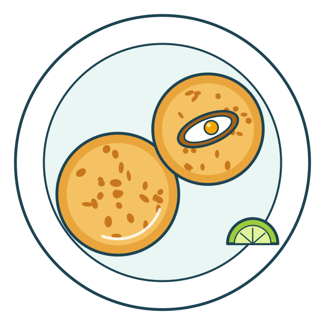
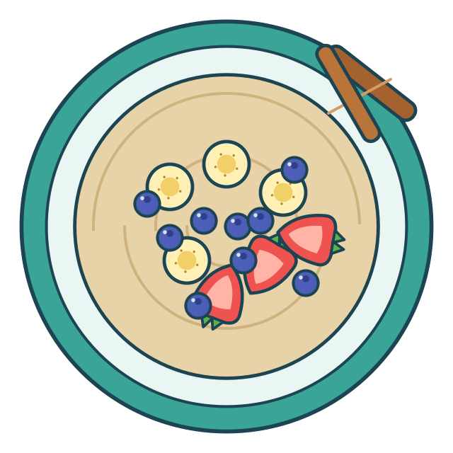

.png)
Desayunos · 8 recetas
Desayunos que enamoran
-

DesayunoArepa de huevo
La arepa frita rellena de huevo de la costa Caribe: crujiente por fuera, jugosa por dentro.
- 45 min
- 4 arepas grandes (o 6 medianas)
- Media
-
 Desayuno
DesayunoYogur con granola y fruta fresca
Cremoso y fresco, con granola casera tostada. Listo en 20 minutos.
- 20 min
- 2 porciones
- Muy fácil
-
 Desayuno
DesayunoSmoothie de frutas
Fresas, mango y banano licuados en menos de 10 minutos.
- 10 min
- 2 vasos
- Muy fácil
-
 Desayuno
DesayunoSándwich de jamón y queso
Tostado y crujiente, con el jamón dorado aparte para más sabor.
- 15 min
- 2 sándwiches
- Fácil
-
 Desayuno
DesayunoPanqueques esponjosos
Masa rápida de leche, harina y huevo. Rinde de 7 a 10.
- 25 min
- 7 a 10 panqueques
- Fácil
-
 Desayuno
DesayunoHuevos pericos
Huevos revueltos con tomate y cebolla larga, el desayuno colombiano de siempre.
- 20 min
- 2 porciones
- Muy fácil
-
 Desayuno
DesayunoEnsalada fresca con vinagreta de limón
Lechuga, tomate cherry y naranja con una vinagreta ligera de limón.
- 10 min
- 4 porciones
- Fácil
-

DesayunoAvena con frutas
Avena cocida en leche, con fruta fresca y canela.
- 20 min
- 1 porción
- Fácil